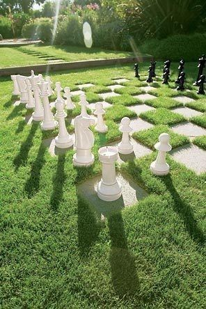
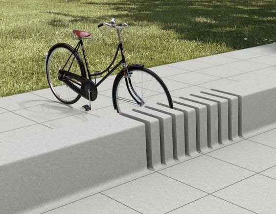

Exterior
Ajedrez en el jardín
Imagina un escenario donde el ajedrez se convierte en una expresión sublime de diseño y armonía con la naturaleza. En el vasto lienzo verde del jardín, se despliega un tablero de ajedrez gigante donde la estrategia del juego se entrelaza con la belleza de la naturaleza.
Las casillas oscuras del tablero son, en sí mismas, extensiones del césped del jardín. La hierba crece con libertad, creando un tapiz natural que se mezcla armoniosamente con el entorno.
Este diseño no es solo un juego de ajedrez; es una declaración artística que fusiona el intelecto del juego con la serenidad de la naturaleza. Cada movimiento estratégico se convierte en un acto de conexión con el entorno, recordándonos la importancia de encontrar equilibrio y belleza en cada rincón de nuestro mundo. Este ajedrez en el jardín no solo desafía las mentes de los jugadores, sino que también celebra la creatividad y la armonía entre la obra humana y la creación natural.
Parking
Banco de cemento meticulosamente diseñado en medio de un espacio al aire libre, donde la funcionalidad y la estética se encuentran en una armoniosa fusión. Este banco, más que un simple asiento, se convierte en un innovador punto de encuentro para los amantes de la bicicleta y aquellos que buscan disfrutar de la charla al aire libre.
El diseño del banco incorpora ingeniosamente ranuras estratégicamente ubicadas, pensadas para albergar las ruedas de las bicicletas. Estas ranuras no solo sirven como soporte seguro para estacionar las bicicletas, sino que también permiten que quienes estén sentados puedan conversar sin obstaculizar el paso del resto del espacio. Es una solución ingeniosa que fomenta la convivencia y el intercambio social, mientras se respeta el espacio circundante.
El material principal, el cemento, se presenta de manera elegante y moderna. Las líneas limpias y la superficie pulida del banco transmiten una sensación de durabilidad y solidez, a la vez que se integra armoniosamente con el entorno al aire libre. El color neutro del cemento permite que el banco se convierta en un elemento atemporal, adaptándose a diversos estilos y entornos urbanos o naturales.